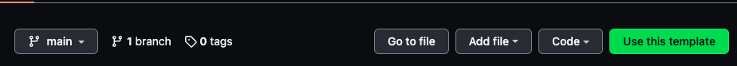

I started looking into API performance testing again recently. As part of delivering an API to production, performance testing is crucial to see how your API performs under load ( more on that shortly)
You might have heard of the ridiculous load that Shopify handled over BFCM (Black Friday/Cyber Monday) weekend. They executed and ran performance testing on their systems well in advance as far back as July to make sure they were well prepared for "game-day".
⏪ Rewinding for a moment — preparing for an event of this scale doesn't happen overnight. In anticipation of BFCM 2021 we began load testing back in July! To better simulate real global traffic we spread out our load generation across @GoogleCloud's global network. pic.twitter.com/5oXqFOadae
— Shopify Engineering (@ShopifyEng) November 30, 2021
Now there are many tools that are out there in the wild. I have worked with JMeter quite extensively, Gatling and Artillery. But as always, I like to do some research and see what is happening in that space.
Enter k6!
I follow ThoughtWorks tech radar and they identified this new tool. So I decided to have a play around.
K6

- Created in 2016 by loadImpact
- Acquired by Grafana in 2021
- 14.6k Github stars ⭐️
- Built in golang, test scripts using
JavascriptTypescript 😉 - Multiple choices for storage (datadog/kafka/cloudwatch/Prometheus/JSON/CSV)
- Converters (HAR/Postman/OAS)
- Github action
- Test builder/browser recorder (low code options)
- Aligns with “API first” approach
I mention "API first" here as that is a common practice for organizations now. In my previous post, I talked about another API first tool to use when mocking APIs.
Installation
There are several ways to install k6 depending on your operating system or system environment. But in this article, I will only touch on two of them, MacBook and Docker.
You can install k6 on a MacBook by using brew
brew install k6
or via docker
docker pull loadimpact/k6
You can find the full explanation here https://k6.io/docs/getting-started/installation/
Typescript template
As I mentioned above, the test scripts can be defined in javascript. But I have decided from the beginning to use typescript instead for static type checking. I have created a typescript template on Github that can be easily re-used by anyone. It is built on the good work that k6 did with some enhancements.

Rationale
While JavaScript is great for a myriad of reasons, one area where it falls short is type safety and developer ergonomics. It's perfectly possible to write JavaScript code that will look OK and behave OK until a certain condition forces the executor into a faulty branch.
While it, of course, still is possible to shoot yourself in the foot with TypeScript as well, it's significantly harder. Without adding much overhead, TypeScript will:
- Improve the ability to safely refactor your code.
- Improve readability and maintainability.
- Allow you to drop a lot of the defensive code previously needed to make sure consumers are calling functions properly.
Lifecycle
The four distinct life cycle stages in a k6 test are "init", "setup", "VU" and "teardown"
Init and VU stages
Scripts must contain, at the very least, a default function - this defines the entry point for your VUs, similar to the main() function in many other languages.
Code inside default is called "VU code", and is run over and over for as long as the test is running. Code outside of it is called "init code", and is run only once per VU (Virtual User).
A VU will execute the default function from start to end in sequence. Nothing out of the ordinary so far, but here's the important part; once the VU reaches the end of the default function it will loop back to the start and execute the code all over.
Setup and teardown stages
Beyond the required init and VU stages, which is code run for each VU, k6 also supports test-wide setup and teardown stages, like many other testing frameworks and tools. The setup and teardown functions, like the default function, need to be exported functions. But unlike the default function setup and teardown are only called once for a test. setup is called at the beginning of the test, after the init stage but before the VU stage (default function), and teardown is called at the end of a test, after the VU stage (default function).
You might have noticed the function signature of the default function and teardown function takes an argument, which we here refer to as data.
This data will be whatever is returned in the setup function, so a mechanism for passing data from the setup stage to the subsequent VU and teardown stages.
Further below I will showcase how in setup you can inject in an access token to the default function for an API secured by OAuth2.
Basic example
import { sleep, check } from "k6";
import { Options } from "k6/options";
import http, { Response } from "k6/http";
import { padStart } from "lodash";
import { textSummary } from "./helper";
import { Trend } from "k6/metrics";
// 1. init code
console.log(padStart("Hello TypeScript!", 20, " "));
//custom define metric
const durationInSeconds = new Trend("duration_in_seconds");
export let options: Options = {
vus: 5, //no. of concurrent virtual users
duration: "5s",
discardResponseBodies: true, //discard response bodies to improve perf
//if you want to fail the whole load test use thresholds
thresholds: {
http_req_failed: ["rate<0.01"], // http errors should be less than 1%
http_req_duration: ["p(95)<350"], // 95% of requests should be below 350ms
},
// httpDebug: "true",
userAgent: "K6GreetingsDemo/1.0",
};
export function setup() {
//setup is called once off
// 2. setup code
}
export default () => {
// 3. VU code
let baseUrl = __ENV.BASE_URL ?? "http://localhost:8090";
let url = `${baseUrl}/greetings`;
const res: Response = http.get(url, {
tags: { team: "team-label", api: "greetings" },
});
check(res, {
"status is 200": () => res.status === 200
});
// we know that the duration is in millisecond
// but for demonstration purposes, we convert it to second
durationInSeconds.add(res.timings.duration / 1000);
sleep(1);
};
export function handleSummary(data: any) {
console.log("Preparing the end-of-test summary...");
// Send the results to some remote server or trigger a hook
return {
stdout: textSummary(data, { indent: " ", enableColors: true }), // Show the text summary to stdout...
};
}
First, we imported the dependencies on top. k6 has types (@k6/types) that are nice when developing in typescript.
Note that in the background, k6 doesn’t run in NodeJS, since in general JavaScript is not well suited for high performance. It’s written in Go to achieve the desired high-performance testing.
The test itself is running inside the exported default function. This part of the code is what we usually called as VU Code. So, the test is running once and uses only one virtual user (think of this as a real user, but simulated) by default, but you can change that using options. We discussed the lifecycle earlier.
So in the example above, we are simulating 5 users over 5 secs. We have set thresholds for the test in relation to response time and error rate. We have added in an additional trend to showcase how that is defined. No setup is involved here. We have one check that the status is 200.
To run this we can run the script yarn bundle. This will transpile to JS using babel and bundled with webpack. The outputted file will be located in the dist dir.
Now run locally:
k6 run dist/greetings.js
You’ll see the result of the test right away on the terminal. Something similar to this.

You can see the built-in metrics that were outputted and also your custom metrics duration_in_seconds. To read more about the metrics go to https://k6.io/docs/using-k6/metrics/
Now I have only outputted this to stdout. But you may decide you want to pipe it into a time series database like influxdb, APM such as datadog or appdynamics which is all possible. For more on the supported outputs check out https://k6.io/docs/getting-started/results-output/. If you want to look at an example of using influxdb and grafana check out here.
API first tools
Now I mentioned earlier that it supports the "api first" approach. In the past, I have looked to use tools such as open api generator to generate server stubs based on the OAS.
Slack have talked about this approach recently regarding their APIs. And stoplight has some great resources on the API first approach too. So I looked into open api generator and saw they actually supported k6. Let's try that out next.
OAS + k6
I have designed a sample OAS already, called greetings API and I wanted to generate the k6 script using open api generator. You can follow along by cloning this repo
docker pull openapitools/openapi-generator-cli
docker run --rm -v ${PWD}:/local openapitools/openapi-generator-cli generate \
-i /local/oas3.yaml \
-g k6 \
-o /local/k6-oas3/ \
--skip-validate-spec
Here I pull down the docker image and then run the cmd by mounting my oas file and using the generator type k6. This then generates some boilerplate test script code inside the dir k6-oas3.
NB: This will need to be refined and enhanced afterward but is a great starting point.
open api to typescript
Another tool I found useful is this node module open api typescript.
I read an article recently on how etsy migrated from JS to TS and they used this tool to generate the types which can save a lot of time and aligns with the "API first" approach.
So in the example below I will showcase how to use the types when running a load test against bpay API. This API is secured by OAuth2 client credentials grant type also. You will see that I use the setup function to inject in the access_token that's needed when running the test.
As I am defining my script in typescript and this API method is a post, I can use openapi-typescript to generate the types for me from the OAS. This saves me a lot of time not having to define my own interfaces.
To generate the types:
npx openapi-typescript bpay/oas3.yaml --output src/bpay/schema.ts
This generates the types in the bpay dir.
Now let's have a look at the test script for bpay API.
import http from "k6/http";
import { group, check, sleep } from "k6";
import { PaymentPaymentMethodEnum } from "./bpay";
import { Options } from "k6/options";
import { getToken, Options as BpayOptions } from "./helper";
import { components } from "./bpay";
type Payment = components["schemas"]["Payment"];
type PaymentItem = components["schemas"]["PaymentItem"];
const BASE_URL = "https://sandbox.api.bpaygroup.com.au/payments/v1";
// Sleep duration between successive requests.
// You might want to edit the value of this variable or remove calls to the sleep function on the script.
const SLEEP_DURATION = 0.1;
// Global variables should be initialized.
export let options: Options = {
vus: 1, //no. of concurrent visual users
duration: "1s",
httpDebug: "true",
};
export function setup() {
const options: BpayOptions = {
clientId: `${__ENV.CLIENT_ID}`,
clientSecret: `${__ENV.CLIENT_SECRET}`,
domain: "https://sandbox.api.bpaygroup.com.au",
};
try {
return getToken(options);
} catch (error) {
return "";
}
}
//desctructing assigment here and explicit type annotation
export default function ({ access_token = "" }: { access_token: string }) {
group("/validatepayments", () => {
let url = BASE_URL + `/validatepayments`;
const payment: Payment = {
billerCode: "565572",
crn: "651234567890123",
amount: 234.83,
paymentMethod: PaymentPaymentMethodEnum.Debit,
settlementDate: "2017-10-23",
};
const payment1: Payment = {
billerCode: "1313",
crn: "1230",
amount: 1045.98,
paymentMethod: PaymentPaymentMethodEnum.Debit,
settlementDate: "2017-11-06",
};
const paymentItem: PaymentItem = { tid: "1", payment };
const paymentItem1: PaymentItem = { tid: "2", payment: payment1 };
const payments: Array<PaymentItem> = [];
payments.push(paymentItem);
payments.push(paymentItem1);
const payload = { payments };
let params = {
headers: {
"Content-Type": "application/json",
Accept: "application/json",
Authorization: `Bearer ${access_token}`,
},
};
let request = http.post(url, JSON.stringify(payload), params);
check(request, {
"ok":
(r) => r.status === 200,
});
sleep(SLEEP_DURATION);
});
}
Let's look at the imports first. You can see we are importing bpay types that were auto-generated. These types are subsequently used when building up the payload inside the
default function. I'm running against bpays sandbox env and it's a simple smoke test.
I will shed some light on the different types of performance tests you can run later.
Now in the setup function, you can see I've defined a helper fn to get the access token. This performs a request against the sandbox env with your client id and secret and returns the access token. I can then return this value which is then passed into the default fn to be used in the Authorisation header.
NB I am using env variables here for client_id and secret as they should not be committed into src code.
The default fn constructs the payload and submits the post request to the API with the bearer token.
I have not defined any thresholds in this example but just a simple check on the HTTP status response.
You can see how easy it is to define your smoke test and utilize the tools at your disposal if you adopt the "api first" approach.
Browser builder
Now, let's say I'm a bit lazy 😅 and want to go the low-code approach! k6 does have a browser recorder extension for chrome and firefox that can record your interactions and download a har (HTTP archive file). This then can be imported into k6 cloud and provide a nice GUI to construct the script. Once you are happy with the script you can copy this locally and use it with the CLI.
Builder:

Corresponding script:

Types of testing
The examples above showcased smoke tests running against your environment(s) (or what is now called "shifting perf left"). But it is possible to perform many types of tests using k6, each type serving a different purpose.
Smoke test
Smoke test is a regular load test, configured for a minimal load.
You want to run a smoke test as a sanity check every time you write a new script or modify an existing script.

- can be run as part of CI pipeline - "shifting perf left"
- More ideal for microservices
k6 options for smoke test:

Load test
Load Testing is primarily concerned with assessing the current performance of your system in terms of concurrent users or requests per second.

If you need some understanding about the amount of traffic your system is seeing on average and during peak
hours. ie. How to configure performance thresholds.
If your system crashes under a load test, it means that your load test has morphed into a stress test!
K6 options for load test:

Stress test
Stress testing is to assess the availability and stability of the system under heavy load (think HA).
To execute a proper stress test, you need a tool to push the system over its normal operations, to its limits, and beyond the breaking point.”

You typically want to stress test an API or website to
determine:
- How your system will behave under extreme conditions.
- What the maximum capacity of your system is in terms of users or throughput.
- The breaking point of your system and its failure mode.
- If your system will recover without manual intervention after the stress test is over.
Companies use this form of testing for black Friday sales for example.
K6 options for stress test:

Soak test
A soak test uncovers performance and reliability issues stemming from a system being under pressure for an extended period.

You typically run this test to:
- Verify that your system doesn't suffer from bugs or
memory leaks, which result in a crash or restart after
several hours of operation. - Verify that expected application restarts don't lose requests.
- Find bugs related to race-conditions that appear sporadically.
- Make sure your database doesn't exhaust the allotted storage space and stops.
- Make sure your logs don't exhaust the allotted disk storage.
- Make sure the external services you depend on don't
stop working after a certain amount of requests are
executed.
K6 options for soak test:

Conclusion
If you are comfortable developing in javascript or typescript, k6 is a breeze to use. There are so many options you could use, scenarios if you need advanced user behavior, saving the test result in a CSV or JSON file, having a dashboard for presentation using grafana, etc.
As I demoed earlier, if you adopt the "API first" approach there are tools you can use such as open API generator and openapi-to-typescript that can help improve the development experience.
Happy testing!